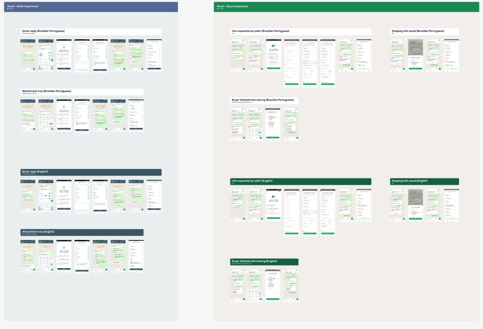

Meta · WhatsApp · Pesquisa qualitativa
Biz AI & Pix Native no WhatsApp.
Pesquisa de UX em ambiente de produção, com celulares, contas bancárias e transações Pix reais, para avaliar IA em contas comerciais e pagamentos nativos dentro do WhatsApp no Brasil.
Contexto
Este é um estudo qualitativo de UX para avaliar duas iniciativas estratégicas dentro do ecossistema do WhatsApp no Brasil: Biz AI e Pix Native. O estudo foi realizado em ambiente de produção (Prod/GK), permitindo que participantes interagissem com experiências reais usando seus próprios celulares, suas próprias contas bancárias e transações Pix reais.
Hoje, quando consumidores compram de empresas pelo WhatsApp, o fluxo costuma ser fragmentado. Em muitos casos, o usuário conversa com o estabelecimento dentro do WhatsApp, mas precisa sair do aplicativo para concluir o pagamento no banco, copiar códigos Pix, compartilhar comprovantes ou alternar entre vários aplicativos. A Meta estava avaliando uma nova experiência, o Pix Native, cujo objetivo é permitir que todo o fluxo de pagamento aconteça diretamente dentro do WhatsApp.
Além disso, o estudo buscou compreender como consumidores interagem com contas comerciais operadas por inteligência artificial (Biz AI): se os usuários entendem que estão conversando com uma IA, se confiam nas respostas recebidas e até que ponto conseguem concluir suas jornadas de compra de forma eficiente e satisfatória.
Mais do que uma avaliação de usabilidade, este projeto teve forte foco em trust (confiança): entender o que aumenta ou reduz a confiança dos usuários ao conversar com agentes de IA e ao conectar suas contas bancárias ao WhatsApp.
Isso inclui percepções sobre segurança, privacidade, golpes, autenticação e movimentação financeira.
Objetivos
Biz AI
- Entender como consumidores interagem com contas comerciais operadas por IA dentro do WhatsApp.
- Identificar pontos de fricção durante a jornada de descoberta, seleção de produtos, compra e atendimento.
- Avaliar a percepção dos usuários sobre a qualidade e a inteligência das respostas dos agentes de IA.
- Entender como falhas, respostas inadequadas ou transferências para atendimento humano afetam a confiança na experiência.
Pix Native
- Avaliar a compreensão dos usuários sobre a proposta de conectar uma conta bancária ao WhatsApp.
- Explorar barreiras, receios e fatores que impactam a disposição dos usuários em usar a funcionalidade.
- Avaliar a experiência de onboarding e conexão bancária.
- Avaliar a percepção de segurança durante o fluxo de autenticação.
- Entender a aceitação de pagamentos nativos feitos integralmente dentro do WhatsApp.
- Avaliar a intenção futura de uso para compras cotidianas, valores mais altos e pagamentos recorrentes.
Metodologia
- Abordagem
- Qualitativa
- Método
- EP com teste de usabilidade
- Duração
- 60 a 75 minutos por sessão
- Local
- Ipsos Pinheiros, São Paulo
- Formato
- Presencial
- Amostra
- 12 participantes + piloto
- Ambiente
- Produção (Prod/GK)
Participantes utilizando:
- celular próprio;
- WhatsApp pessoal;
- contas bancárias reais;
- dinheiro real para as transações Pix (reembolsado pela Ipsos).
O time da Meta acompanhou as sessões ao vivo da sala de observação da Ipsos, com tradução simultânea português-inglês durante todo o campo. A moderadora podia receber perguntas adicionais ao longo das entrevistas.
Nosso papel
Como Ipsos, fomos responsáveis pelo projeto de ponta a ponta:
- Recrutamento dos participantes.
- Moderação das sessões, com o time da Meta observando ao vivo.
- Report com as principais recomendações para o fluxo de design e a experiência.

Impacto
Por confidencialidade, não podemos divulgar os resultados diretos da pesquisa. Mas o impacto foi enorme:
A feature foi liberada para 60% dos usuários de WhatsApp no Brasil, com enorme adoção.
Próximo case
Google · GeminiQuer saber mais sobre este projeto? Posso apresentar este case em mais detalhes em uma conversa.